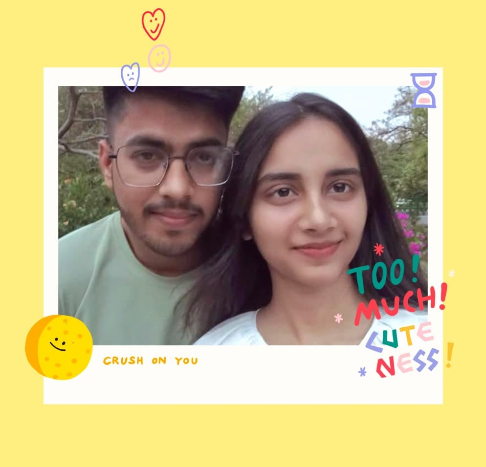

Chap 2 -> 29th April 🌸
So this was our second meeting on 29th of April, after our first meeting i was dying to see you that is why me ghrpe jhut bolke aya tha ki saket nagar jarha hu dosto k sath, tumko kitne call kiye tumne pick nhi kiye then me bich raste me wait krne lga ki call utha lo but tum nha rhi thi then me vapss jane hi vala tha ki tumhara call aya fir me gya tumhe pick krne , uss white top me ky hi Qatilana lag rhi thi tum Hayyyy 😍 me jagah decide krne me bhot bura hu ye to tumhe pta chal hi gya tha to at the end apan chinaar park me hi chle gye ab vha tumhara hat pakadna then tumhare pas bhetna , tumhara lean hona mere shoulder pe , mera tumhare lap pe let jana , vo tumhare pyare se khule baal hayyy sab khuc kitna pyara lagrha tha 🥰💗 fir i was thinking about kissing you ki vo khadus uncle agye moments khrb krdiye 😂 still jate jate tumhe gadi uthane me mza aya ❤️ fir apan dusre park gye vha tumhara hath pakad k bhet jana sath me mere hat ki kaatna then finally end me vo hugg hayyyyy ese moments k liye jaan dedu me to 😩 seriously kiss krne ka bhot man tha mera but thikhe jo hua sab kafi zada hi hogya , this was the day jab mujhe actually lga hann finally ab tum puri trh se meri ho 💓 puri rat sochta rha vhi sab